Exhibitions
Country pavilions and partner showcases spanning innovation, industry and river science.
Attendees
Conference & Summit Delegates
Exhibitions
Global Speakers
MRC Member Countries
River
The Mekong’s Next Chapter
The Mekong is a source of life, growth and opportunity for millions. As global demand for food, energy and sustainable investment grows, the region has the resources, talent and strategic position to shape a more resilient and prosperous future.
Realising this potential requires leadership that looks beyond borders, partnerships that deliver results and investment that creates lasting value for people and the environment.
The MRC Summit is the highest political forum of the Mekong River Commission. Every four years, the leaders of Cambodia, Lao PDR, Thailand and Viet Nam come together to assess regional progress, strengthen their shared commitment and set the direction for cooperation across the basin.
Held from 2–5 April 2027 in Bangkok, Thailand, the 5th MRC Summit will advance the theme, “Growing Together and Stronger for People, Partnership, and Prosperity.” It sets the terms of engagement: strength through unity, progress through cooperation, and resilience built to respond, adapt and advance.
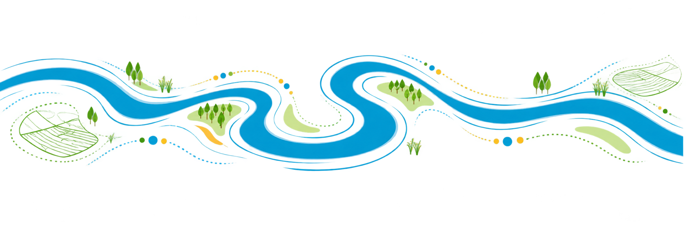
ONE MEKONG. ONE SPIRIT.
Work as one. Lead with unity. Build regional resilience. Advance shared priorities with confidence.
Tap the circles for more information.
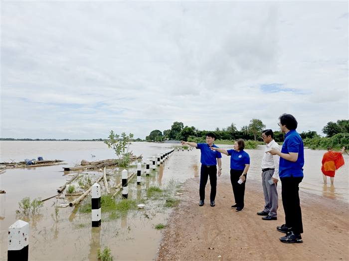
PeopleProtect livelihoods, expand opportunities and place communities at the heart of the Mekong’s future.
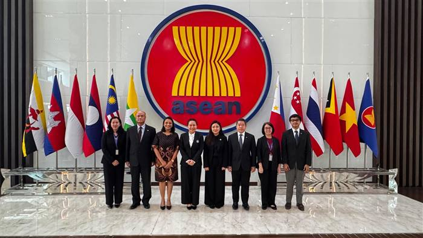
PartnershipsBring governments, businesses and international partners together around shared goals and coordinated action.
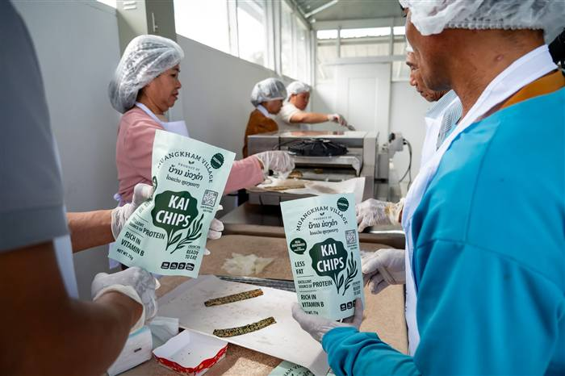
ProsperityUnlock responsible investment, innovation and connectivity to deliver inclusive and sustainable growth.
2–3 April 2027
The Mekong region’s natural resources, dynamic economies, young population and strong foundation of regional cooperation offer significant opportunities for shared progress. Realising this potential will require decisive leadership, stronger partnerships and sustained investment in solutions that protect the river while advancing prosperity.
As part of the 5th MRC Summit, the MRC International Conference brings together leaders, policymakers, experts, practitioners, investors and community voices from the Mekong region and beyond — connecting regional experience with global knowledge, aligning ambition with opportunity, and turning shared priorities into practical action.
The Conference places science, policy and people at the centre of the regional agenda, exploring how climate adaptation, forecasting, digital innovation and community leadership can strengthen resilience for the Mekong River Basin.
A new generation of Mekong leaders — young innovators, citizen scientists and riverpreneurs — will demonstrate how local ideas can address regional challenges, attract investment and create value for both people and nature. Through strategic dialogue, interactive sessions and exhibitions, participants will build new partnerships and identify opportunities for action. This is where leadership will set direction, partnership will build momentum, and investment will move solutions forward.
Connecting creativity with expertise and promising ideas with the partners who can help advance them.
Connecting communities with decision makers to turn lived experience into practical, shared solutions.
Find Your Way
See the full programme by room below
Indicative floor plan · not to scale. Room assignments subject to confirmation.
The detailed programme for this day is still being finalised and will be published closer to the Summit.
Exhibition Hall · Plenary Hall 4 · 40 booths total. Booth assignments subject to confirmation.
What’s On
Country pavilions and partner showcases spanning innovation, industry and river science.
Focused, expert-led dialogues on the issues shaping the basin’s shared future.
Young innovators, citizen scientists and riverpreneurs shaping tomorrow’s Mekong.
Forecasting, digital tools and climate solutions built for the realities of the basin.
Look Back
1st MRC Summit
2010
Hua Hin, Thailand
2nd MRC Summit
2014
Ho Chi Minh City, Viet Nam
3rd MRC Summit
2018
Siem Reap, Cambodia
4th MRC Summit
2023
Vientiane, Lao PDR
5th MRC Summit
2027
Bangkok, Thailand
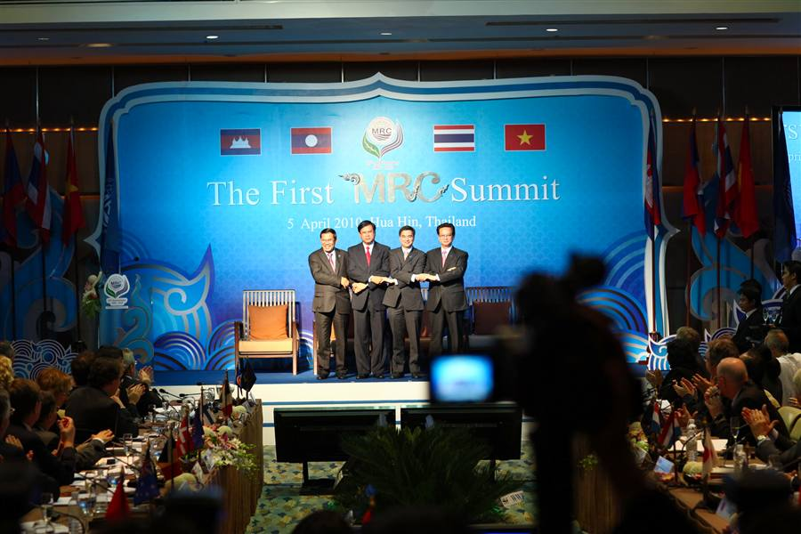
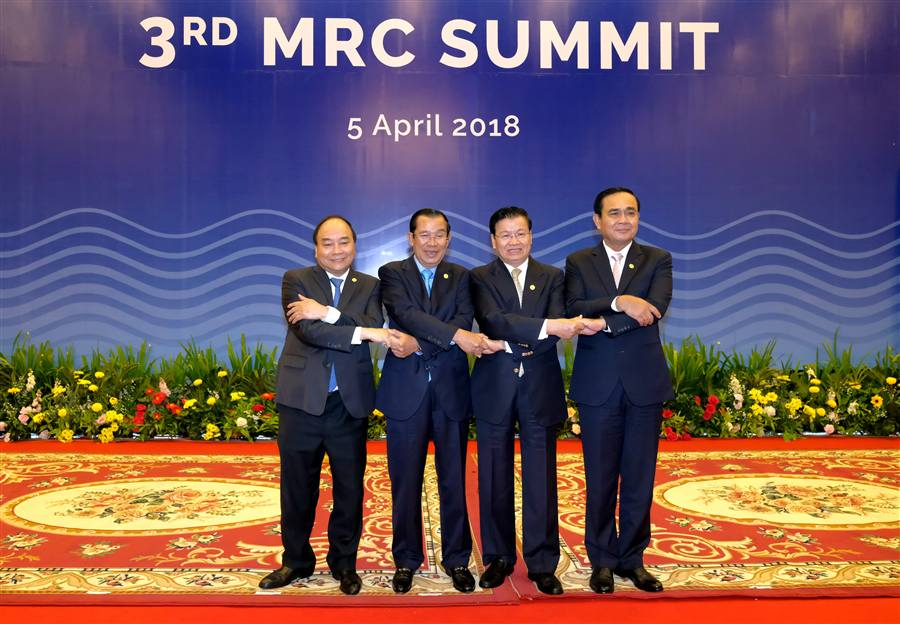
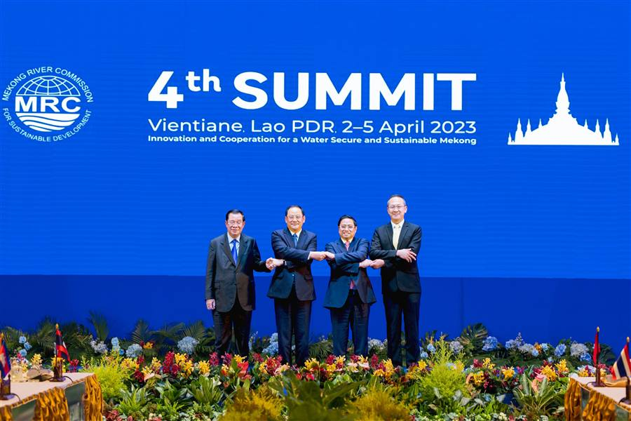
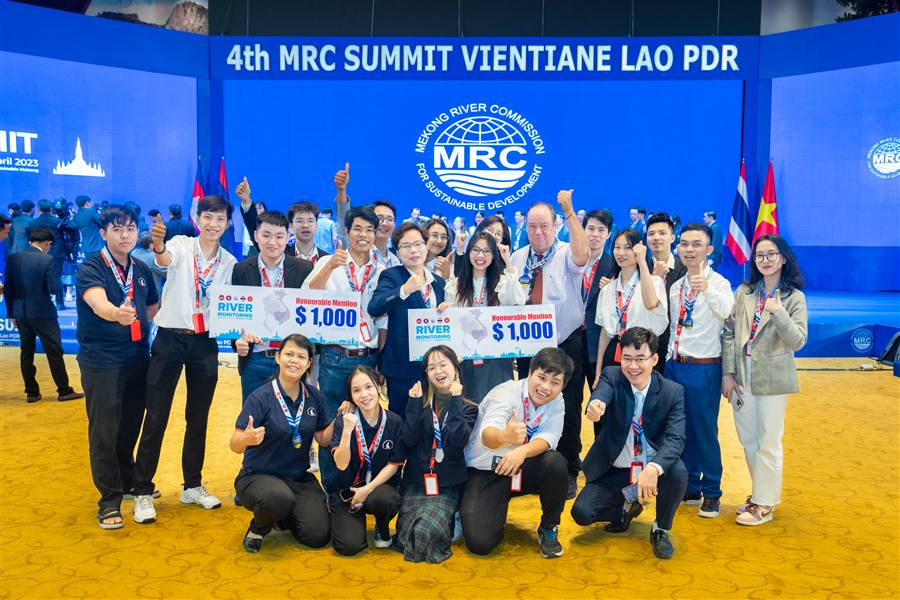
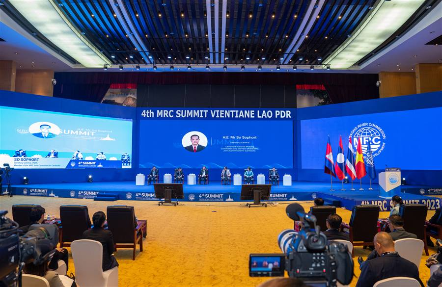
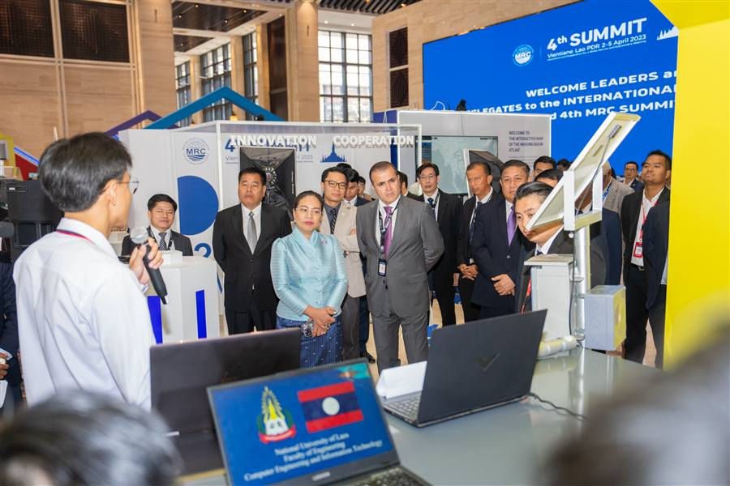
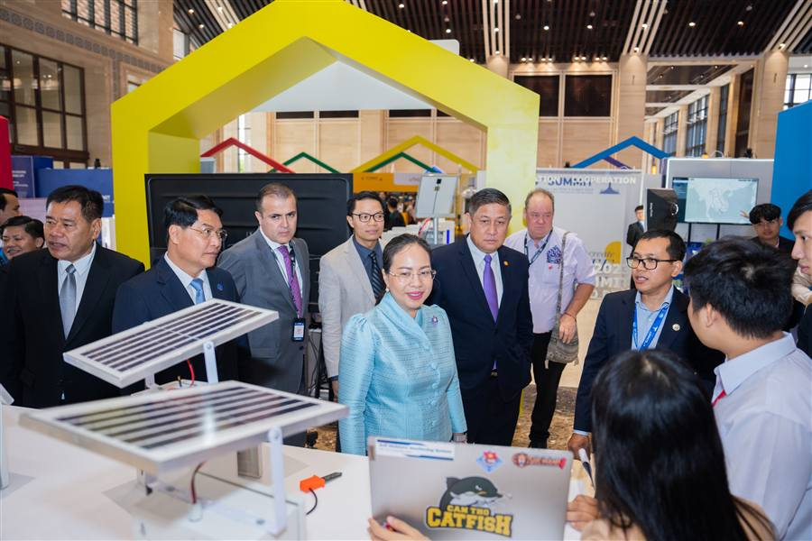
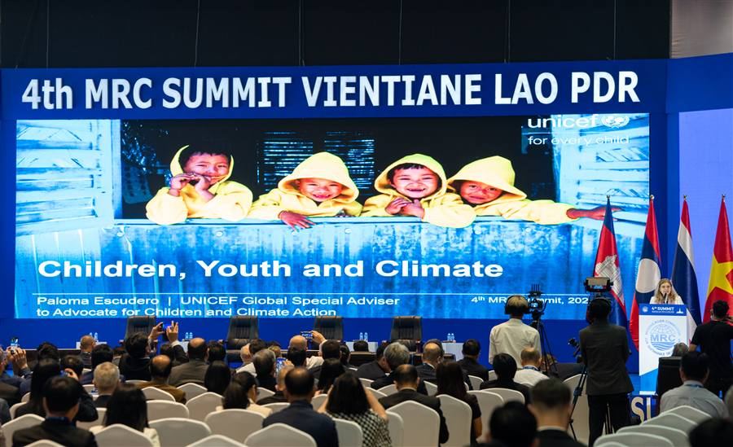
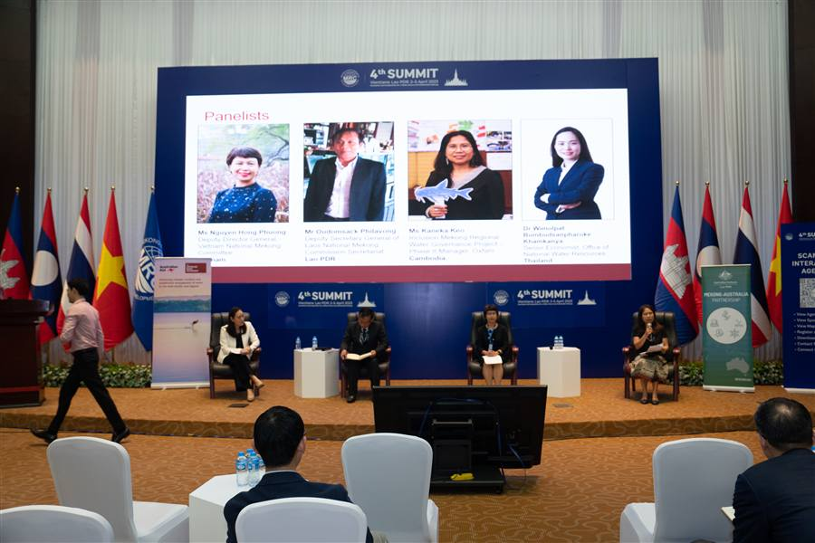
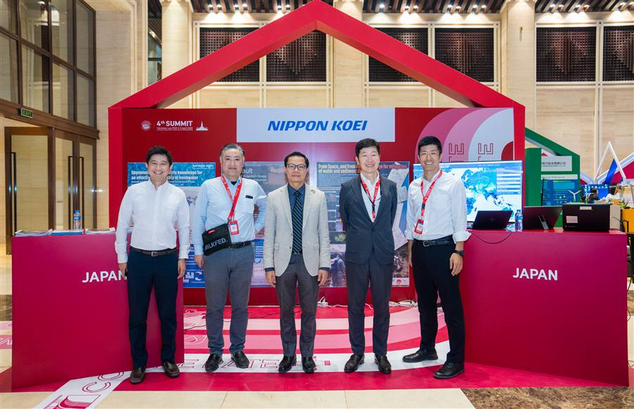
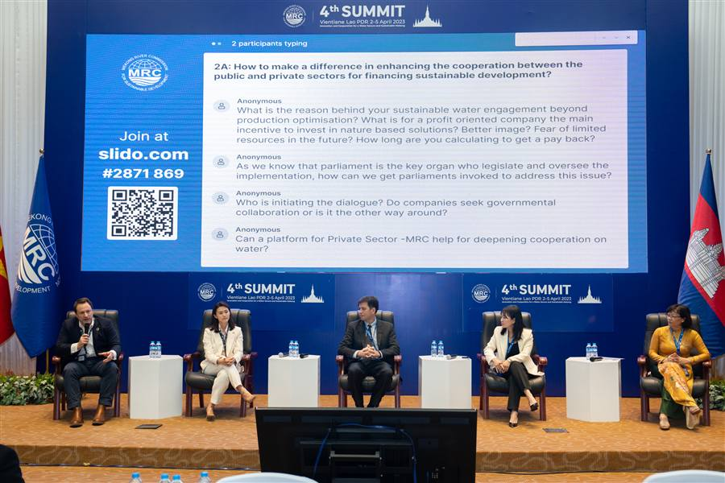
Organised By
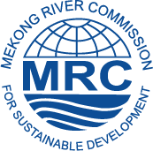
The MRC Member Countries

Development Partners
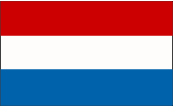
Good to Know
Can’t find what you’re looking for? Reach out to the MRC Secretariat via the contact details down below.
The MRC Summit is the highest-level political forum of the Mekong River Commission, held every four years. It brings together the Prime Ministers/Heads of Government from the four MRC Member Countries—Cambodia, Lao PDR, Thailand, and Viet Nam—alongside Dialogue Partners (China and Myanmar), international partners, and regional stakeholders to review progress in regional cooperation and set strategic directions for the Mekong River Basin.
The event features three primary tracks:
The Summit will take place at the Queen Sirikit National Convention Center (QSNCC) in Bangkok, Thailand. QSNCC is accessible via the MRT (Bangkok Metro) directly at the QSNCC Station (Exit 3), as well as by taxi or ride-hailing services.
Journalists, photographers, and broadcast crews must submit a Media Accreditation Request via the online registration portal. You will be required to upload a valid press card and a formal letter of assignment from your media outlet.
Yes, a fully equipped Media Center will be provided, featuring high-speed internet, workstation desks, press conference rooms, and live broadcast feeds of key sessions.
For further assistance, please contact mrcs@mrcmekong.org.
Pinch or scroll to zoom · drag to pan